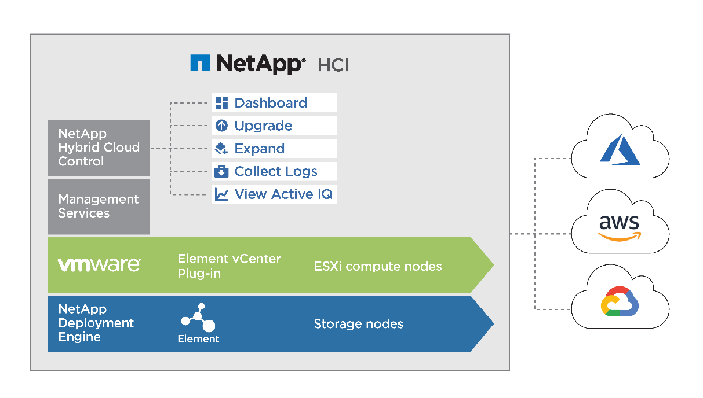
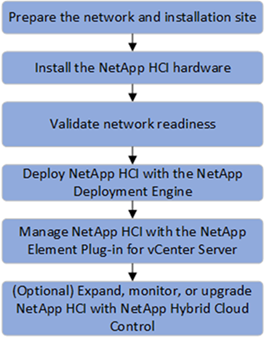
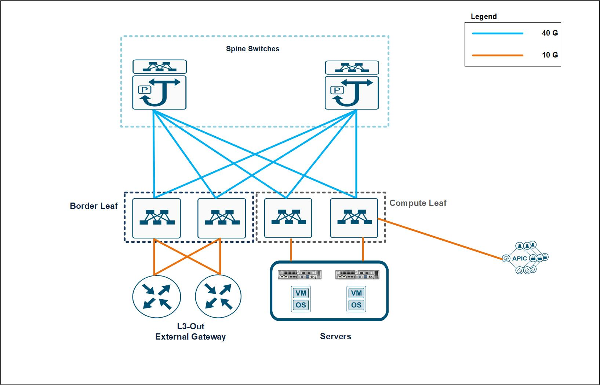
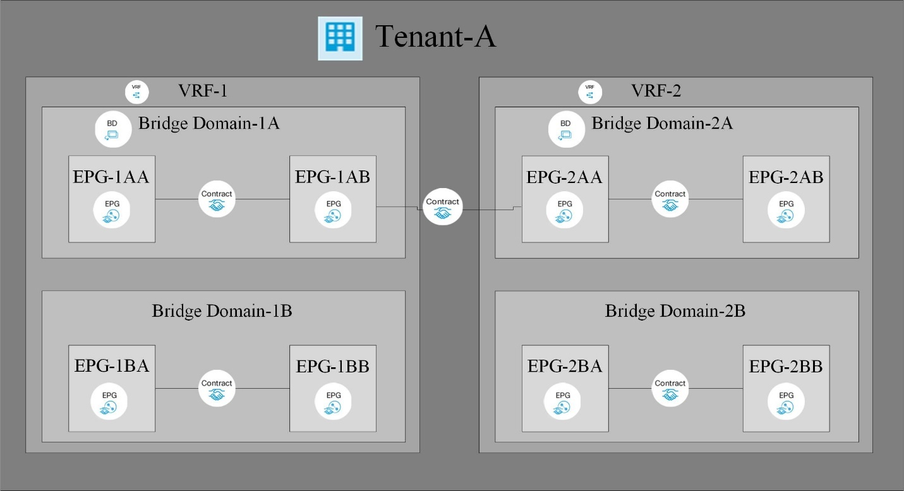
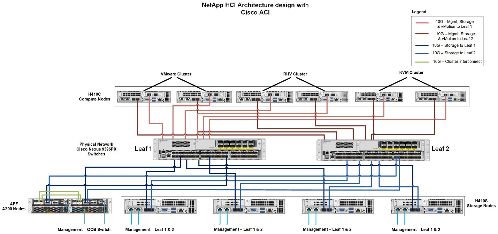

Architecture
Contributors
 Download PDF of this page
Download PDF of this page
Solution Technology
This document outlines the best practices to follow for a fully featured on-premises data center or private cloud while interoperating NetApp HCI with Cisco ACI. To demonstrate workload independence, networking best practices are extended to virtualization solutions, including VMware vSphere and Red Hat Virtualization when deployed over NetApp HCI, and to other storage solutions like NetApp ONTAP and StorageGRID. It also emphasizes the interoperability of Cisco ACI switches with different virtual switches, for example, VMware Distributed Switch (VDS), Cisco ACI Virtual Edge (AVE), Linux Bridge, or Open vSwitch.
NetApp HCI
NetApp HCI is an enterprise-scale, hyper-converged infrastructure solution that delivers compute and storage resources in an agile, scalable, easy-to-manage architecture. Running multiple enterprise-grade workloads can result in resource contention, where one workload interferes with the performance of another. NetApp HCI alleviates this concern with storage quality-of-service (QoS) limits that are available natively within NetApp Element software. Element enables the granular control of every application and volume, helps to eliminate noisy neighbors, and satisfies enterprise performance SLAs. NetApp HCI multitenancy capabilities can help eliminate many traditional performance related problems. See the following graphic for an overview of NetApp HCI.

NetApp HCI streamlines installation through the NetApp Deployment Engine (NDE), an intuitive deployment engine that automates more than 400 inputs to fewer than 30 to get your setup running in about 45 minutes. In addition, a robust suite of APIs enables seamless integration into higher-level management, orchestration, backup, and disaster recovery tools. With the NetApp Hybrid Cloud Control management suite, you can manage, monitor, and upgrade your entire infrastructure throughout its lifecycle through a single pane of glass.
Software-Defined Architecture
NetApp HCI provides a software-defined approach for deploying and managing data and storage resources. NetApp HCI uses NetApp Element software to provide an easy-to-use GUI-based portal and REST-based API for storage automation, configuration, and management. NetApp Element software provides modular and scalable performance, with each storage node delivering guaranteed capacity and throughput to the environment.
NetApp HCI uses the NetApp Deployment Engine (NDE) to automate the configuration and deployment of physical infrastructure, including the installation and configuration of the VMware vSphere environment and the integration of the NetApp Element Plug-in for vCenter Server. The following figure depicts an overview of the process for deploying NetApp HCI.

Performance Guarantee
A common challenge is delivering predictable performance when multiple applications are sharing the same infrastructure. An application interfering with other applications creates performance degradation. Mainstream applications have unique I/O patterns that can affect each other’s performance when deployed in a shared environment. To address these issues, the NetApp HCI Quality of Service (QoS) feature allows fine-grained control of performance for every application, thereby eliminating noisy neighbors and satisfying performance SLAs. In NetApp HCI, each volume is configured with minimum, maximum, and burst IOPS values. The minimum IOPS setting guarantees performance, independent of what other applications on the system are doing. The maximum and burst values control allocation, enabling the system to deliver consistent performance to all workloads.
NetApp Element software uses the iSCSI storage protocol, a standard way to encapsulate SCSI commands on a traditional TCP/IP network. Element uses a technique called iSCSI login redirection for better performance. iSCSI login redirection is a key part of the NetApp Element software cluster. When a host login request is received, the node decides which member of the cluster should handle the traffic based on IOPS and the capacity requirements for the volume. Volumes are distributed across the NetApp Element software cluster and are redistributed if a single node is handling too much traffic for its volumes or if a new node is added. Multiple copies of a given volume are allocated across the array. In this manner, if a node failure is followed by volume redistribution, there is no effect on host connectivity beyond a logout and login with redirection to the new location. With iSCSI login redirection, a NetApp Element software cluster is a self-healing, scale-out architecture that is capable of nondisruptive upgrades and operations.
Interoperability
Previous generations of hyperconverged infrastructure typically required fixed resource ratios, limiting deployments to four-node and eight-node configurations. NetApp HCI is a disaggregated hyper-converged infrastructure that can scale compute and storage resources independently. Independent scaling prevents costly and inefficient overprovisioning and simplifies capacity and performance planning.
The architectural design choices offered enables you to confidently scale on your terms, making HCI viable for core Tier-1 data center applications and platforms. It is architected in building blocks at either the chassis or the node level. Each chassis can hold four nodes in a mixed configuration of storage or compute nodes. NetApp HCI is available in mix-and-match, small, medium, and large storage and compute configurations.
NetApp HCI provides proven multiprotocol and hybrid- cloud support with enterprise grade features. It also offers easy interoperability with multiple different host virtualization technologies and storage solutions. Deploying ONTAP Select and StorageGRID as appliances expands NetApp HCI storage capabilities to include file, block, and object storage services. NetApp HCI provides an agile infrastructure platform for virtual data centers of different flavors. VMware vSphere, Red Hat Virtualization, KVM, Citrix Hypervisor, and so on are supported platforms that can use the NetApp HCI infrastructure to provide a scalable, enterprise-grade on-premises virtual environment.
For more details, see the NetApp HCI documentation.
Cisco ACI
Cisco ACI is an industry leading software-defined networking solution that facilitates application agility and data center automation. Cisco ACI has a holistic architecture with a centralized policy-driven management. It implements a programmable data center Virtual Extensible LAN (VXLAN) fabric that delivers distributed networking and security for any workload, regardless of its nature (virtual, physical, container, and so on).
Cisco pioneered the introduction of intent-based networking with Cisco ACI in the data center. It combines the high- performance hardware and robust software integrated with two important SDN features―overlays and centralized control. The ACI fabric consists of Cisco Nexus 9000 series switches running in ACI mode and a cluster of at least three centrally managed Application Policy Infrastructure Controllers (APIC) servers. The following figure provides an overview of Cisco ACI.

Policy-Driven Networking
Cisco ACI, with its policy driven model, makes network hardware stateless. The Application Policy Infrastructure Controller (APIC) acts as the central controller managing and configuring all the switches in the ACI fabric. The Cisco ACI fabric consists of Cisco Nexus 9000 series switches which are centrally configured and managed by the cluster of APICs using the declarative policy model.
Cisco ACI uses logical constructs to form a layered policy architecture to define and manage the different functions of the entire fabric, including infrastructure, authentication, security, services, applications, and diagnostics.
The following figure depicts the categorization and relation between different logical constructs in Cisco ACI.

Tenants are logical containers with administrative boundaries that exercise domain-based access control. It is a logical policy isolation and does not equate to a real network construct.
Within the tenant, a context is a unique layer-3 forwarding policy domain. A context can be directly mapped to the Virtual Routing and Forwarding (VRF) concept of traditional networks. In fact, a context is also called VRF. Because each context is a separate layer- 3 domain, two different contexts can have overlapping IP spaces.
Within a context, a bridge domain (BD) represents a unique layer-2 forwarding construct. The bridge domain defines the unique layer-2 MAC address space and can be equated to a layer-2 flood domain or to a layer-3 gateway. A bridge domain can have zero subnets, but it must have at least one subnet if it is to perform routing for the hosts residing in the BD.
In ACI, an endpoint is anything that communicates on the network, be it a compute host, a storage device, a network entity that is not part of the ACI fabric, a VM, and so on. A group of endpoints that have the same policy requirements are categorized into an Endpoint Group (EPG). An EPG is used to configure and manage multiple endpoints together. An EPG is a member of a bridge domain. One EPG cannot be a member of multiple bridge domains, but multiple EPGs can be members of a single bridge domain.
All the endpoints that belong to the same EPG can communicate with each other. However, endpoints in different EPGs cannot communicate by default, but they can communicate if a contract exists between the two EPGs allowing that communication. Contracts can be equated to ACLs in traditional networking. However, it differs from an ACL in the way that it doesn’t involve specifying specific IP addresses as source and destination and that contracts are applied to an EPG as a whole.
See the Cisco ACI documentation for more information.
Networking Advantages
Cisco ACI provides many advantages over traditional networking. Programmability and automation are critical features of a scalable data center virtualization infrastructure and the policy driven mechanism of Cisco ACI opens a lot of opportunities for providing optimal physical and virtual networking.
-
Virtual Machine Manager (VMM) Integration. With the Cisco ACI open REST API features, integration with virtualized environments is easy. Cisco ACI supports VMM integration with multiple hypervisors and provides automated access and control over the hypervisor virtual switches to the networking constructs in ACI. VMM integration in ACI seamlessly extends the ACI policy framework to virtual workloads. In other words, VMM integration allows Cisco ACI to control the virtual switches running on virtualization hosts and to extend the ACI fabric access policies to virtual workloads. The integration also automates the hypervisor’s virtual switch deployment and configuration tasks. Cisco ACI VMM integration provides the following benefits:
-
Single point of policy management for physical and virtual environments through APIC
-
Faster application deployment, with transparent instantiation of applications in virtual environments
-
Full integrated visibility into the health of the application through holistic aggregation of information across physical and virtual environments
-
Simplified networking configuration for virtual workloads because the port-group or VM NIC profiles required to attach to the VMs are created automatically. For more information on Cisco ACI VMM integration, see the Cisco documentation. In addition, see the Cisco ACI virtualization compatibility matrix for version compatibility details.
-
-
Micro-segmentation. Micro-segmentation in Cisco ACI allows you to classify the endpoints in existing application EPGs into microsegment (uSeg) EPGs using network-based or VM-based attributes. This helps for filtering the endpoints more granularly and apply specific dynamic policies on those endpoints. Micro-segmentation can be applied to any endpoints within the tenant. Cisco supports micro-segmentation on a variety of virtual switches - Cisco ACI Virtual Edge, VMware VDS and Microsoft vSwitch. uSeg EPGs can be configured with multiple attributes but an endpoint can be assigned to only one EPG. For more details, see the Cisco ACI Virtualization guide for the specific version.
-
Intra-EPG Isolation. By default, all endpoints belonging to the same EPG can communicate with each other. Intra-EPG Isolation in Cisco ACI is a feature to prevent endpoints in the same EPG communicate with each other. It achieves isolation by using different VLANs for traffic from ACI leaf to hypervisor hosts and from hypervisor hosts to ACI leaf. Intra-EPG isolation can be enforced on both application EPGs and microsegment EPGs. See the specific version of the Cisco ACI virtualization guide for more information.
Architectural Diagram

This diagram represents the physical architecture of NetApp HCI with Cisco ACI that was designed for this solution. Two leaf switches connected via spines and managed by a cluster of three APICs forms the ACI fabric. The leaf switches are connected to upstream routers for external connectivity. Three pairs of NetApp HCI compute nodes (each pair dedicated for a hypervisor) are configured with a two-cable option. Four storage nodes were configured with four-cable option to form the Element cluster. A pair of AFF A200 nodes are used to provide the ONTAP capabilities to the system.
Hardware and Software Requirements
Compute
The following tables list the hardware and software compute resources utilized in the solution. The components that are used in any implementation of the solution might vary based on customer requirements.
| Hardware | Model | Quantity |
|---|---|---|
NetApp HCI compute nodes |
NetApp H410C |
6 |
| Software | Purpose | Version |
|---|---|---|
VMware ESXi |
Virtualization |
6.7 |
VMware vCenter Server Appliance |
Virtualization management |
6.7 |
Red Hat Enterprise Linux |
Operating system |
7.7 |
KVM |
Virtualization |
1.5.3-167 |
Red Hat Virtualization |
Virtualization |
4.3.9 |
Storage
The following tables list the hardware and software storage resources used in this solution. The components that are used in any particular implementation of the solution might vary based on customer requirements.
| Hardware | Model | Quantity |
|---|---|---|
NetApp HCI storage nodes |
NetApp H410S |
4 |
AFF |
A200 |
2 |
| Software | Purpose | Version |
|---|---|---|
NetApp HCI |
Infrastructure |
1.8 |
NetApp Element |
Storage |
12.0 |
ONTAP |
Storage |
9.7P6 |
ONTAP Select |
Storage |
9.7 |
Storage Grid |
Storage |
11.3 |
Networking
The following tables list the hardware and software network resources used in this solution. The components that are used in any particular implementation of the solution might vary based on customer requirements.
| Hardware | Model | Quantity |
|---|---|---|
Cisco UCS server |
UCS C-220 M3 |
3 |
Cisco Nexus |
N9K-C9336-PQ |
2 |
Cisco Nexus |
N9K-C9396-PX |
2 |
| Software | Purpose | Version |
|---|---|---|
Cisco APIC |
Network Management |
3.2(9h) |
Cisco Nexus ACI-mode Switch |
Network |
13.2(9h) |
Cisco AVE |
Network |
1.2.9 |
Open vSwitch (OVS) |
Network |
2.9.2 |
VMware Virtual Distributed Switch |
Network |
6.6 |
 Edit on GitHub
Edit on GitHub